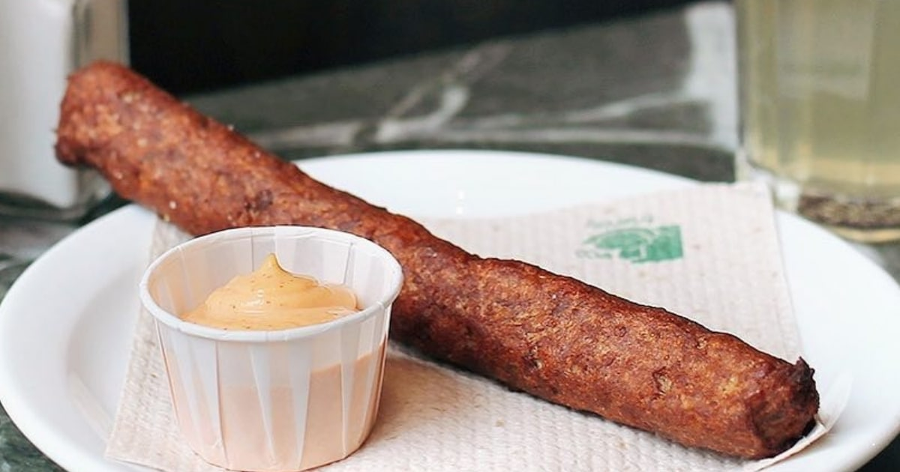

Le guide des meilleures friteries de France
Recette secrète de la fricadelle

Nous la conaissons tous cette fameuse saucisse aux allures de boudin ou de....
Très connue au Benelux et dans le nord de la France, cette saucisse à du mal à séduire le reste de l'Europe.
Pourtant son gout si raffiné n'est plus à démontrer, son parfum enivrant de friture saura régaler les papilles des plus récalcitrantes.
Idéal dans un Américain
Préparation: 30 min - Difficulté: moyenne - Cuisson: 5min
Pour élaborer une fricadelle, voici a liste des ingrédients pour 2 personnes
- 1 Oignon
- 300g de Viande hachée (de préference du veau)
- 125g de pain
- 1 oeuf
- 25cl de lait
- 2 cas de persil haché
- 6 cas d'huile
- sel/poivre
- pincée de muscade
Etapes à suivre
- Faire tremper le pain dans le lait.
- Faire rissoler l'oignon haché dans une cuillère d'huile.
- Égoutter la mie de pain et la presser, ajouter le hachis, l’œuf, l'oignon cuit, le persil et la muscade.
- Saler et poivrer au goût.
- Bien mélanger à la fourchette.
- Former des saucisses et les rouler dans la farine
- Les faire dorer à la poêle, au saindoux ou à l'huile.
- On peut aussi les cuire à la friteuse 5min avant la fin de cuisson des frites d'accompagnement
- Servir avec des frites et une sauce Picalilli.